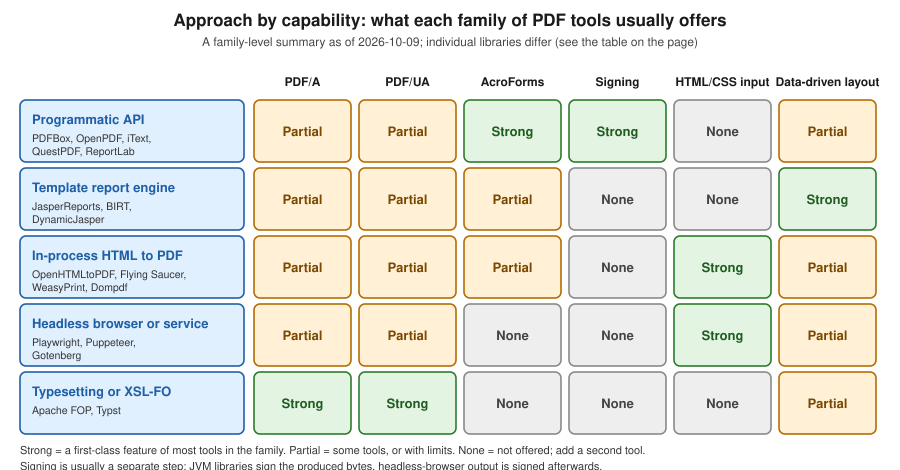

Alternatives & Other Ecosystems
|
This content was generated with the assistance of AI and should be verified against the official documentation before being relied on in production. |
The rest of this section builds Bookshelf Billing, a Spring Boot 4 service on Java 21, around iText 9.8 and JasperReports 7.0. Those two are not the only way to produce a PDF, and for some projects they are not the best way. This page surveys the alternatives so that the choice is made with the whole field in view: the other Java libraries, the tools that live in other ecosystems (.NET, Python, PHP, JavaScript) and the services you can run next to a Java application. It gives a comparison table (licence, version, approach and four capabilities), a figure that groups the tools by approach, and four short examples. The families themselves are introduced in Introduction & Approaches; this page is the reference that sits behind that decision flowchart.
Everything is stated as of 2026-10-09. Versions of the Maven Central, npm, PyPI, Packagist and NuGet artefacts and the latest GitHub release of Gotenberg, Typst and BIRT were read from the registries on that date. The capability columns are a summary of each project’s own documentation, which changes faster than a page like this. A cell marked "not re-verified" was not checked against the current documentation on that date, and a cell that says "none" means that the feature is not offered by the library itself, not that it is impossible to add with a second tool. Check the linked official pages before you commit to a library.
How the tools group
Twenty-odd tools reduce to five families, which is what matters when you choose. Within a family the trade-offs are similar, and the families differ in what they ask of the developer.

- Programmatic APIs
-
You place text, images and tables with code. PDFBox, OpenPDF, QuestPDF, PDFsharp, ReportLab, PDFKit, pdf-lib and pdfmake belong here, as does iText. Control is total and the dependency is a library, but every layout rule is yours.
- Template report engines
-
A designer lays out a report once and the engine binds data to it. JasperReports and BIRT are the Java examples, and DynamicJasper builds JasperReports reports from code instead of from a designer. These suit tabular, paginated output.
- In-process HTML to PDF
-
You write HTML and CSS and a library paginates it: OpenHTMLtoPDF, Flying Saucer, WeasyPrint, Dompdf and mPDF. None is a browser, so modern CSS (flexbox, grid, custom properties) is partly or not at all supported, depending on the library.
- Headless browser or service
-
Chromium prints the page: Playwright and Puppeteer drive it from code, and Gotenberg wraps Chromium and LibreOffice in an HTTP API. The CSS is as good as it gets, at the price of a browser process to run and to size.
- Typesetting and XSL-FO
-
A separate language describes the document: XSL-FO for Apache FOP, Typst markup for Typst. Docx4j sits next to this family, because it builds Word documents and converts them.
Comparison
The table lists every library surveyed. "Version" is the latest release on the registry of the tool’s ecosystem (listed in References), and the official pages are listed there too. For licences, "permissive" means MIT, BSD or Apache-2.0, and "copyleft" means GPL or LGPL, whose obligations depend on whether you link, modify or redistribute.
| Tool | Licence | Version | Approach | PDF/A | PDF/UA | Forms | Signing |
|---|---|---|---|---|---|---|---|
Apache PDFBox |
Apache-2.0 |
3.0.8 |
Java, programmatic, plus parsing and manipulation |
Producible by hand (embed fonts, an output intent and XMP metadata, as in the |
Manual tagging through the structure tree API |
Yes (AcroForm) |
Yes (CMS signing API, see Signing with Apache PDFBox and EU DSS) |
OpenPDF |
LGPL-2.1 or MPL-2.0 |
3.0.5 |
Java, programmatic, a community fork of the old iText 4 line |
Limited, not re-verified |
Basic tagging, not re-verified |
Yes |
Yes (stamper-based API) |
OpenHTMLtoPDF |
LGPL-3.0 |
1.1.97 |
Java, HTML/CSS to PDF on top of PDFBox |
Yes (PDF/A standards listed by the project) |
Yes (accessible output listed by the project) |
Basic form controls |
None; sign the result with PDFBox |
Flying Saucer |
LGPL-2.1 |
10.6.0 |
Java, XHTML/CSS 2.1 to PDF, with an OpenPDF back end |
Not re-verified |
Not re-verified |
Limited |
None |
Apache FOP |
Apache-2.0 |
2.11 |
Java, XSL-FO to PDF and other formats |
Yes (documented in the FOP PDF/A page) |
Yes (documented in the FOP accessibility page) |
None |
None |
Eclipse BIRT |
EPL-2.0 |
4.25.0 (GitHub release) |
Java, template report engine with a designer |
Not re-verified |
Not re-verified |
Not re-verified |
None |
DynamicJasper |
LGPL |
7.0.0 |
Java, builds JasperReports reports from code |
Inherited from the JasperReports exporter |
Inherited from the JasperReports exporter |
Inherited from the JasperReports exporter |
None |
docx4j |
Apache-2.0 |
17.3.2 |
Java, builds and converts Word documents; PDF through XSL-FO or an office suite |
Follows the converter used |
Follows the converter used |
Word content controls, not AcroForms |
Signs DOCX packages, not PDF |
Gotenberg |
MIT |
8.37.0 |
HTTP service around Chromium and LibreOffice, with PDF merge and split |
Yes (PDF/A-2 and PDF/A-3 variants) |
Yes (PDF/UA-1) |
None |
None |
Playwright |
Apache-2.0 |
1.64.0 |
Headless Chromium driven from Node, Python, Java or .NET |
None |
Tagged PDF option since 1.42 |
None |
None |
Puppeteer |
Apache-2.0 |
25.13.0 |
Headless Chromium driven from Node |
None |
Tagged PDF option, not re-verified |
None |
None |
WeasyPrint |
BSD-3-Clause |
70.0 |
Python, HTML/CSS to PDF |
Yes (PDF/A-1 to PDF/A-4 variants, not guaranteed valid) |
Yes (PDF/UA-1 and PDF/UA-2 variants, with tags) |
Yes ( |
None |
ReportLab |
BSD (open-source edition) |
5.0.1 |
Python, programmatic; a commercial edition adds Plus features |
Not re-verified |
Not re-verified |
Yes (AcroForm via the canvas) |
None in the open-source edition |
pdfmake |
MIT |
0.3.11 |
JavaScript, declarative document definition |
Not re-verified |
Not re-verified |
None |
None |
PDFKit |
MIT |
0.20.2 |
JavaScript, programmatic |
Yes (documented subsets) |
Yes (documented checklist for PDF/UA) |
Yes |
None |
pdf-lib |
MIT |
1.17.1, last published 2021-11-06, unmaintained |
JavaScript, create and modify |
None |
None |
Yes (strong form support) |
None |
QuestPDF |
Revenue-based: a free community licence below a revenue threshold, paid above it (read the licence page) |
2026.9.1 |
.NET, fluent programmatic layout |
Yes (PDF/A-2 and PDF/A-3 variants) |
Yes (PDF/UA-1) |
None |
None |
PDFsharp and MigraDoc |
MIT |
6.2.4 (7.0.0 only as a preview) |
.NET, programmatic (PDFsharp) and document model (MigraDoc) |
Not re-verified |
Not re-verified |
Limited |
Not re-verified |
tc-lib-pdf |
LGPL-3.0-or-later |
8.78.2 |
PHP, the successor of TCPDF |
Not re-verified |
Not re-verified |
Not re-verified |
Not re-verified |
Dompdf |
LGPL-2.1 |
3.1.6 |
PHP, HTML/CSS to PDF |
None |
None |
None |
None |
mPDF |
GPL-2.0-only |
8.3.1 |
PHP, HTML/CSS to PDF |
Not re-verified |
Not re-verified |
Not re-verified |
None |
Typst |
Apache-2.0 |
0.15.1 |
Command-line typesetter with its own markup language |
Yes (several PDF/A parts, combinable with PDF/UA-1) |
Yes (PDF/UA-1) |
None |
None |
Reading the table by questions:
-
You cannot take the AGPL and need a free Java library. Apache PDFBox (Apache-2.0) is the safe base. OpenPDF is the option when the code you have is written against the old
com.lowagie.textAPI. The licence consequences are explained in Introduction & Approaches. -
You write HTML already. OpenHTMLtoPDF in process, or Gotenberg or Playwright out of process. The choice is mostly between a library you can call from a unit test and a browser whose CSS is complete.
-
You need conformance. Of the free tools, Apache FOP, Gotenberg, WeasyPrint, Typst and OpenHTMLtoPDF say that they generate PDF/A and PDF/UA. Their own documentation is clear that generation is not validation: run veraPDF, as described in PDF Standards & Conformance.
-
You need to sign. Nothing in the HTML families signs. Produce the PDF, then sign the bytes with PDFBox and EU DSS as in Signing with Apache PDFBox & EU DSS or with iText.
OpenPDF, iText and the licence history
A common source of confusion is that OpenPDF and iText share a past. The old iText 1 and 2 line (package com.lowagie.text)
was licensed under the MPL and LGPL. From iText 5 onward the code moved to the AGPL, and iText 7 and later is a rewrite
with a different API (kernel, layout and so on); iText 5 itself is end of life. Books and tutorials written for the
com.lowagie API describe the old licence and the old classes, not what you get from Maven Central today under the name
iText: iText 9 is AGPLv3 or commercial. OpenPDF is the LGPL and MPL community fork of the old API, still maintained, and
its 3.0 line renames the packages from com.lowagie to org.openpdf, so migrating from 2.x or earlier to 3.x is a
package rename plus a version bump. JasperReports 7 uses a separate OpenPDF-based fork for its PDF back end. Which of
them you pick is therefore less about the code you can copy from the internet and more about the licence you can accept;
the API mapping from the old classes to iText 9 is on iText Architecture & Modules.
Apache PDFBox
PDFBox is the Apache-licensed library for creating, reading, merging and filling PDFs. It does not lay out text for you: you set a font, a position and a string, and wrapping and pagination are your code. That is the right level when the document is small and fixed, such as a label, a cover sheet or a stamp, and PDFBox is also the library that the rest of this section uses for signing and for form filling. Maven coordinates (first use on this page):
<dependency>
<groupId>org.apache.pdfbox</groupId>
<artifactId>pdfbox</artifactId>
<version>3.0.8</version>
</dependency>package com.example.alt;
import java.io.IOException;
import java.nio.file.Path;
import org.apache.pdfbox.pdmodel.PDDocument;
import org.apache.pdfbox.pdmodel.PDPage;
import org.apache.pdfbox.pdmodel.PDPageContentStream;
import org.apache.pdfbox.pdmodel.font.PDType1Font;
import org.apache.pdfbox.pdmodel.font.Standard14Fonts;
public final class PdfBoxHello {
public static void main(String[] args) throws IOException {
try (PDDocument document = new PDDocument()) {
PDPage page = new PDPage();
document.addPage(page);
PDType1Font font = new PDType1Font(Standard14Fonts.FontName.HELVETICA_BOLD);
try (PDPageContentStream content = new PDPageContentStream(document, page)) {
content.beginText();
content.setFont(font, 18);
content.newLineAtOffset(72, 720);
content.showText("Invoice INV-2026-0001");
content.endText();
}
document.save(Path.of("target", "pdfbox-hello.pdf").toFile());
}
}
}This example was compiled and run against PDFBox 3.0.8 on Java 21 language level, and produced a one-page PDF. Since
PDFBox 3 the standard 14 fonts are created from Standard14Fonts.FontName; the old PDType1Font.HELVETICA_BOLD
constants are gone. A standard font has no embedding and only a Latin character set, so use PDType0Font.load with a TrueType
file for anything else. Official documentation: PDFBox getting started
and the 3.0 migration guide.
OpenHTMLtoPDF
OpenHTMLtoPDF renders XHTML and CSS to a PDF through PDFBox. Input must be well-formed XML (use an HTML cleaner such as
jsoup to convert from HTML5), and the CSS support is a CSS 2.1 subset with some extensions, not a browser. The project
publishes under the group io.github.openhtmltopdf. Maven coordinates (first use on this page):
<dependency>
<groupId>io.github.openhtmltopdf</groupId>
<artifactId>openhtmltopdf-pdfbox</artifactId>
<version>1.1.97</version>
</dependency>package com.example.alt;
import com.openhtmltopdf.pdfboxout.PdfRendererBuilder;
import java.io.IOException;
import java.io.OutputStream;
import java.nio.file.Files;
import java.nio.file.Path;
public final class HtmlToPdf {
private static final String XHTML = """
<html xmlns="http://www.w3.org/1999/xhtml">
<head><style>
body { font-family: sans-serif; }
table { border-collapse: collapse; width: 100%; }
td, th { border: 1px solid #444; padding: 4px; }
</style></head>
<body>
<h1>Invoice INV-2026-0001</h1>
<table><tr><th>Item</th><th>Total</th></tr>
<tr><td>Book</td><td>12.50</td></tr></table>
</body></html>
""";
public static void main(String[] args) throws IOException {
try (OutputStream out = Files.newOutputStream(Path.of("target", "html-hello.pdf"))) {
PdfRendererBuilder builder = new PdfRendererBuilder();
builder.useFastMode();
builder.withHtmlContent(XHTML, null);
builder.toStream(out);
builder.run();
}
}
}This example was compiled and run against OpenHTMLtoPDF 1.1.97 together with PDFBox 3.0.8, producing a one-page PDF. For
conformance, the builder has usePdfAConformance and usePdfUaAccessibility options; they are listed in the project
README but were not exercised here. Official documentation: OpenHTMLtoPDF on GitHub
and its wiki.
Gotenberg
Gotenberg is a Docker image that exposes Chromium and LibreOffice conversions as HTTP routes. From Java you call it with
any HTTP client; the pattern is to keep the PDF engine out of the application’s JVM and container, so a browser crash or
a memory spike does not take the service down. The request below converts an HTML file with curl; the image tag follows
the major version.
docker run --rm -p 3000:3000 gotenberg/gotenberg:8
curl --request POST http://localhost:3000/forms/chromium/convert/html \
--form files=@index.html \
--form paperWidth=8.27 \
--form paperHeight=11.7 \
--form pdfa=PDF/A-2b \
--form pdfua=true \
--output invoice.pdfThis request follows the route reference and was not run on the machine used to write this page, because no container
runtime was available; verify the field names against the version of the image you deploy. Gotenberg needs an index.html
file in the multipart request, and referenced assets are sent as extra files in the same request. Official documentation:
Convert HTML with Chromium.
Playwright and Puppeteer
Both drive Chromium from code. page.pdf() prints the page using the print stylesheet and works only in headless
Chromium, so the same HTML you review in a browser is what is printed. The example is Node because that is the reference
API; Playwright also has Java, Python and .NET bindings with the same method.
import { chromium } from 'playwright';
const browser = await chromium.launch();
const page = await browser.newPage();
await page.goto('http://localhost:8080/invoices/INV-2026-0001');
await page.pdf({
path: 'invoice.pdf',
format: 'A4',
printBackground: true,
tagged: true,
});
await browser.close();This snippet was not run on the machine used to write this page; the tagged option is documented for Playwright 1.42
and later. Treat Chromium as a heavy dependency: a pool of reused browsers, a timeout per page and a memory limit per
container are not optional in production. Official documentation:
Playwright page.pdf() and
Puppeteer page.pdf().
Other ecosystems
The tools below are not callable from a Java service without an extra process, but they are what a team in that ecosystem will use, and knowing them helps when you share a document pipeline.
-
.NET: QuestPDF, PDFsharp and MigraDoc. QuestPDF is a fluent layout API with a revenue-based licence; read the terms before you use it in a company. PDFsharp and MigraDoc are MIT: PDFsharp draws pages, MigraDoc adds a paragraph and table model on top.
-
Python: WeasyPrint and ReportLab. WeasyPrint is the closest to a browser for print CSS among the in-process tools and states plainly that its PDF/A and PDF/UA output is not guaranteed valid. ReportLab is the long-standing programmatic library, with a commercial edition for the template language.
-
PHP: Dompdf, mPDF and tc-lib-pdf. Dompdf and mPDF convert HTML. mPDF is GPL, so check that before bundling it into closed-source software. tc-lib-pdf is the actively developed successor of TCPDF.
-
JavaScript: pdfmake, PDFKit and pdf-lib. pdfmake takes a JSON document definition, PDFKit is imperative and has documented PDF/UA support, and pdf-lib is strong at forms and at modifying existing files but has not been published since 2021, so treat it as unmaintained.
-
Typst. A modern typesetting system with a scripting language, strong at documents with a lot of structure and maths, and run as a command-line tool.
Apache POI (Excel, Word and PowerPoint) is covered by a separate issue, #262, and is not part of this section.
Choosing, in brief
Start from the constraint, not from the library:
-
Licence blocks the AGPL: PDFBox, OpenPDF, OpenHTMLtoPDF or Gotenberg.
-
The design already exists as HTML: Gotenberg or Playwright for fidelity, OpenHTMLtoPDF for an in-process library.
-
Long tabular reports with grouping and paging: JasperReports or BIRT, as in Generating Reports from Databases & Services.
-
A regulated invoice, with PDF/A, tagging and signing: iText or PDFBox with EU DSS, with a validation step.
-
A one-off page or a stamp on an existing file: PDFBox.
The simplest check is the one the rest of this section uses: build the same Bookshelf Billing invoice with two candidates and compare the output, the code and the dependencies. A day of that costs less than a wrong choice.
References
-
Maven Central (Java versions), npm, PyPI, Packagist and NuGet (versions read on 2026-10-09)